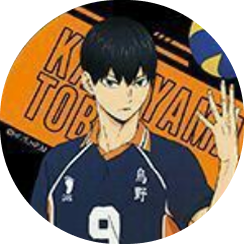
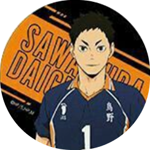
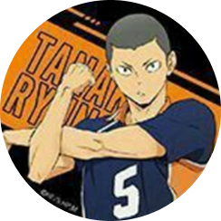
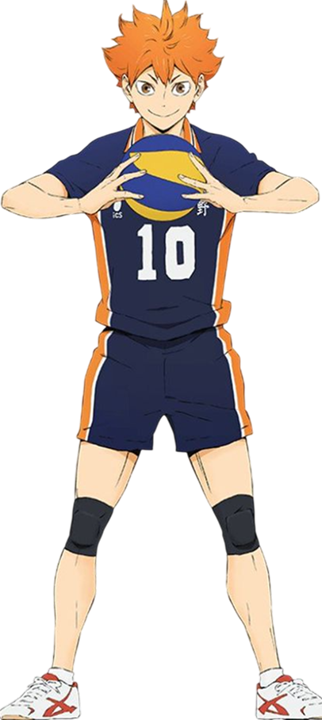
Shoyo Hinata
Idade: 16 anos
Altura: 1,62 m
Número: 10
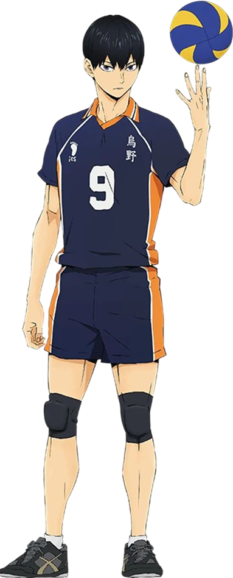
Tobio Kageyama
Idade: 16 anos
Altura: 1,80 m
Número: 9
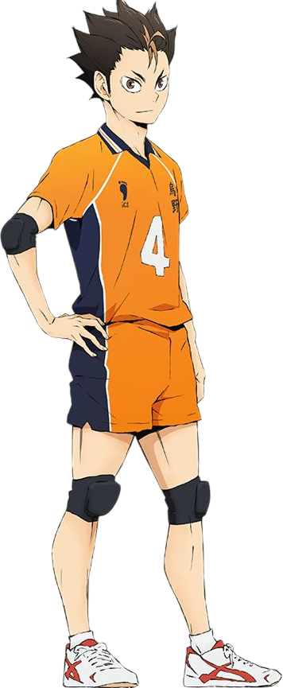
Yu Nishinoya
Idade: 17 anos
Altura: 1,60 m
Número: 4
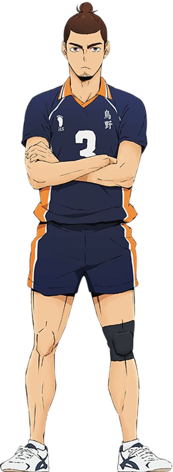
Asahi Azumane
Idade: 18 anos
Altura: 1,86 m
Número: 3
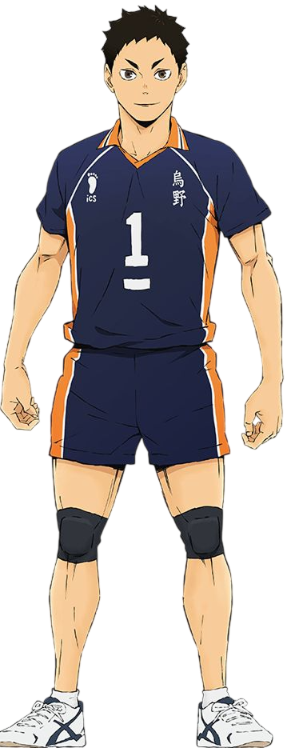
Daichi Sawamura
Idade: 18 anos
Altura: 1,76 m
Número: 1
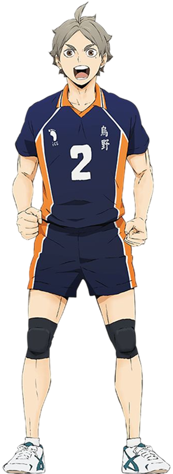
Kōshi Sugawara
Idade: 18 anos
Altura: 1,74 m
Número: 2
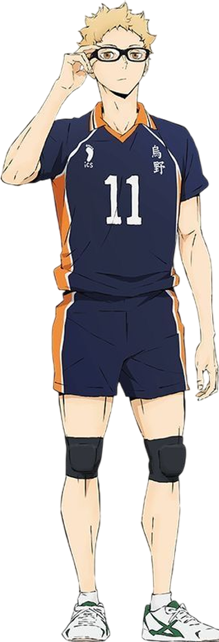
Kei Tsukishima
Idade: 16 anos
Altura: 1,90 m
Número: 11
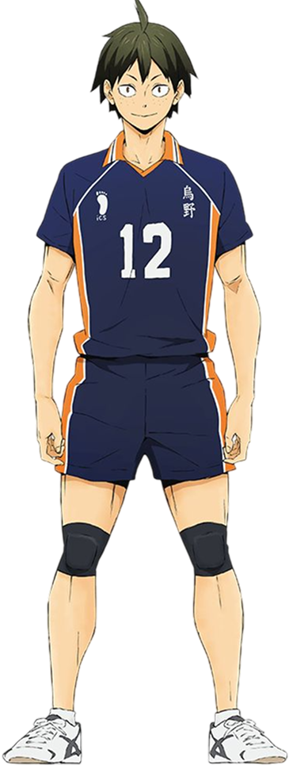
Tadashi Yamaguchi
Idade: 16 anos
Altura: 1,80 m
Número: 12
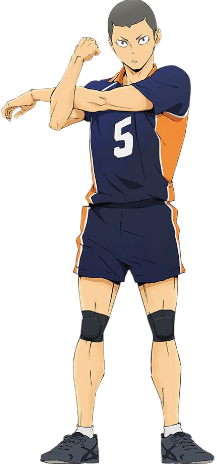
Ryūnosuke Tanaka
Idade: 17anos
Altura: 1,78 m
Número: 5